library(tidyverse)
library(tidymodels)
library(here)
library(skimr)
library(janitor)Bienvendo/a!! 😛
Hoy vamos a hacer algo distinto. Vamos a tratar de predecir quién sobrevive de los pasajeros del Titanic, usando inteligencia artificial.
Ojo. No voy a ser muy exhaustivo, ni tan profundo en el análisis ni usaré modelos de machine learning muy complejos, pues quiero que este artículo te sirva como ejemplo de lo que se puede llegar a hacer y sea simple de seguir. En la vida real la cosa es un poco distinta. Generalmente, se realizan múltiples pruebas con muchos modelos y se van seleccionando en base a su desempeño (ya veremos qué significa esto). Por otro lado, los datos tienden a estar mucho más sucios y el trabajo de limpieza es una de las actividades a la que más se le dedica tiempo y esfuerzo.
Para efectos de este artículo, usarmos los datos de una competencia de Kaggle, en donde está un dataset (un conjunto de datos) sobre los pasajeros del Titanic, en donde se especifican algunas variables y quien sobrevivió o no. Puedes revisar los datos en el siguiente enlace.
Los datos
Como te mencionada, los datos correponden a registros de pasajeros que se subieron en el Titanic. Si, el Titanic. Ese barco británico que naufragó en el océano Atlántico durante la noche del 14 y la madrugada del 15 de abril de 1912, mientras realizaba su viaje inaugural desde Southampton a Nueva York, tras chocar con un iceberg. En el hundimiento la gran mayoría de las personas que iban a bordo, lo que convierte a esta catástrofe en uno de los mayores naufragios de la historia.
Hay una película de como 4 horas donde sale Di Caprio, también. La viste?
Ok. Ya sabemos de qué van los datos.
Los datos incluyen 3 archivos:
gender_submission.csv
test.csv
train.csv
El primero es un ejemplo de cómo se deben subir las predicciones a la web de Kaggle para participar de la competencia (Ah! La competencia tiene que ver con quién logra acertar más con las predicciones).
El archivo test contiene datos de los pasajeros para realizar las pruebas del modelo de machine learning. No contiene datos sobre la sobrevivencia. Son los registros que hay que predecir.
El archivo train contiene los datos de los pasajeros para realizar el entrenamiento del algoritmo de machine learninig. Este tiene especificado si el pasajero sobrevivió o no.
Vamos con el tema…
Cargamos las librerías:
Cargamos los datos:
here::i_am("index.qmd")
train <- read_csv("train.csv")
test <- read_csv("test.csv")Análisis exploratorio
Esta etapa es fundamental. el análisis exploratorio de datos es una de las primeras etapas en cualquier proyectos de ciencia de datos. El objetivo es analizar los datos para entender cómo están compuestos y qué representan. Habitualmente para estos fines, se pueden usar estadísticas descriptivas e inferenciales. Además, el uso de visualizaciones es un elemento super valioso.
Por lo demás, de este análisis exploratorio, se pueden desprender distintas acciones de Feature Engeneering. Este es un paso muy importante en el aprendizaje automático. El feature engineering (o ingeniería de características) se refiere al proceso de diseño de características artificiales en un algoritmo. Estas características artificiales son utilizadas por ese algoritmo para mejorar su rendimiento y precisión.
Este paso es fundamental en los modelos de machine learning. Aunque para efectos de este artículo, posiblemente no haré todo lo que se podría hacer, como expliqué al inicio, para privilegiar la comprensión más que los resultados.
Ya que tenemos los datos, ahora veamos un poco de qué se tratan:
str(train)spec_tbl_df [891 × 12] (S3: spec_tbl_df/tbl_df/tbl/data.frame)
$ PassengerId: num [1:891] 1 2 3 4 5 6 7 8 9 10 ...
$ Survived : num [1:891] 0 1 1 1 0 0 0 0 1 1 ...
$ Pclass : num [1:891] 3 1 3 1 3 3 1 3 3 2 ...
$ Name : chr [1:891] "Braund, Mr. Owen Harris" "Cumings, Mrs. John Bradley (Florence Briggs Thayer)" "Heikkinen, Miss. Laina" "Futrelle, Mrs. Jacques Heath (Lily May Peel)" ...
$ Sex : chr [1:891] "male" "female" "female" "female" ...
$ Age : num [1:891] 22 38 26 35 35 NA 54 2 27 14 ...
$ SibSp : num [1:891] 1 1 0 1 0 0 0 3 0 1 ...
$ Parch : num [1:891] 0 0 0 0 0 0 0 1 2 0 ...
$ Ticket : chr [1:891] "A/5 21171" "PC 17599" "STON/O2. 3101282" "113803" ...
$ Fare : num [1:891] 7.25 71.28 7.92 53.1 8.05 ...
$ Cabin : chr [1:891] NA "C85" NA "C123" ...
$ Embarked : chr [1:891] "S" "C" "S" "S" ...
- attr(*, "spec")=
.. cols(
.. PassengerId = col_double(),
.. Survived = col_double(),
.. Pclass = col_double(),
.. Name = col_character(),
.. Sex = col_character(),
.. Age = col_double(),
.. SibSp = col_double(),
.. Parch = col_double(),
.. Ticket = col_character(),
.. Fare = col_double(),
.. Cabin = col_character(),
.. Embarked = col_character()
.. )
- attr(*, "problems")=<externalptr> str(test)spec_tbl_df [418 × 11] (S3: spec_tbl_df/tbl_df/tbl/data.frame)
$ PassengerId: num [1:418] 892 893 894 895 896 897 898 899 900 901 ...
$ Pclass : num [1:418] 3 3 2 3 3 3 3 2 3 3 ...
$ Name : chr [1:418] "Kelly, Mr. James" "Wilkes, Mrs. James (Ellen Needs)" "Myles, Mr. Thomas Francis" "Wirz, Mr. Albert" ...
$ Sex : chr [1:418] "male" "female" "male" "male" ...
$ Age : num [1:418] 34.5 47 62 27 22 14 30 26 18 21 ...
$ SibSp : num [1:418] 0 1 0 0 1 0 0 1 0 2 ...
$ Parch : num [1:418] 0 0 0 0 1 0 0 1 0 0 ...
$ Ticket : chr [1:418] "330911" "363272" "240276" "315154" ...
$ Fare : num [1:418] 7.83 7 9.69 8.66 12.29 ...
$ Cabin : chr [1:418] NA NA NA NA ...
$ Embarked : chr [1:418] "Q" "S" "Q" "S" ...
- attr(*, "spec")=
.. cols(
.. PassengerId = col_double(),
.. Pclass = col_double(),
.. Name = col_character(),
.. Sex = col_character(),
.. Age = col_double(),
.. SibSp = col_double(),
.. Parch = col_double(),
.. Ticket = col_character(),
.. Fare = col_double(),
.. Cabin = col_character(),
.. Embarked = col_character()
.. )
- attr(*, "problems")=<externalptr> Puedes notar que los 2 archivos son similares en su composición, excepto que train tiene la variable Survived y test no. Además, train contiene casi el doble de registros (filas) que test.
En Kaggle se explican qué significan los variables (diccionario) y ponen algunas notas. Estos datos son importantes para comprender el dataset y pensar en cómo ajustarlos si es necesario. En todo proyecto de datos es muy relevante entender qué representan los datos y cuáles son sus posibilidades.
Diccionario:
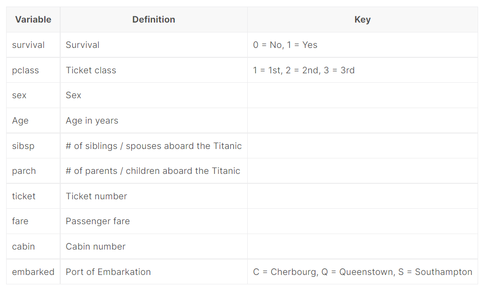
Notas:
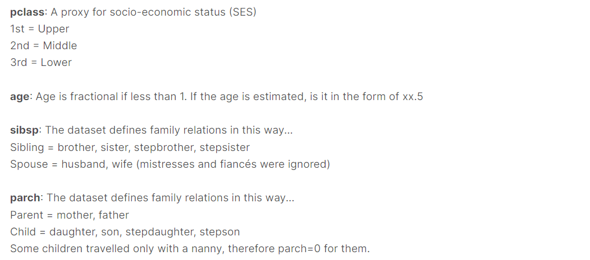
Revisemos las primeras filas de los datos:
head(train)# A tibble: 6 × 12
PassengerId Survived Pclass Name Sex Age SibSp Parch Ticket Fare Cabin
<dbl> <dbl> <dbl> <chr> <chr> <dbl> <dbl> <dbl> <chr> <dbl> <chr>
1 1 0 3 Braund… male 22 1 0 A/5 2… 7.25 <NA>
2 2 1 1 Cuming… fema… 38 1 0 PC 17… 71.3 C85
3 3 1 3 Heikki… fema… 26 0 0 STON/… 7.92 <NA>
4 4 1 1 Futrel… fema… 35 1 0 113803 53.1 C123
5 5 0 3 Allen,… male 35 0 0 373450 8.05 <NA>
6 6 0 3 Moran,… male NA 0 0 330877 8.46 <NA>
# … with 1 more variable: Embarked <chr>head(test)# A tibble: 6 × 11
PassengerId Pclass Name Sex Age SibSp Parch Ticket Fare Cabin Embar…¹
<dbl> <dbl> <chr> <chr> <dbl> <dbl> <dbl> <chr> <dbl> <chr> <chr>
1 892 3 Kelly, … male 34.5 0 0 330911 7.83 <NA> Q
2 893 3 Wilkes,… fema… 47 1 0 363272 7 <NA> S
3 894 2 Myles, … male 62 0 0 240276 9.69 <NA> Q
4 895 3 Wirz, M… male 27 0 0 315154 8.66 <NA> S
5 896 3 Hirvone… fema… 22 1 1 31012… 12.3 <NA> S
6 897 3 Svensso… male 14 0 0 7538 9.22 <NA> S
# … with abbreviated variable name ¹EmbarkedVeamos más cosas de los datos. Usaremos la librería skimr y su función skim para explorar los datos y generar algunas primeras estadísticas de las variables.
skim(train)| Name | train |
| Number of rows | 891 |
| Number of columns | 12 |
| _______________________ | |
| Column type frequency: | |
| character | 5 |
| numeric | 7 |
| ________________________ | |
| Group variables | None |
Variable type: character
| skim_variable | n_missing | complete_rate | min | max | empty | n_unique | whitespace |
|---|---|---|---|---|---|---|---|
| Name | 0 | 1.00 | 12 | 82 | 0 | 891 | 0 |
| Sex | 0 | 1.00 | 4 | 6 | 0 | 2 | 0 |
| Ticket | 0 | 1.00 | 3 | 18 | 0 | 681 | 0 |
| Cabin | 687 | 0.23 | 1 | 15 | 0 | 147 | 0 |
| Embarked | 2 | 1.00 | 1 | 1 | 0 | 3 | 0 |
Variable type: numeric
| skim_variable | n_missing | complete_rate | mean | sd | p0 | p25 | p50 | p75 | p100 | hist |
|---|---|---|---|---|---|---|---|---|---|---|
| PassengerId | 0 | 1.0 | 446.00 | 257.35 | 1.00 | 223.50 | 446.00 | 668.5 | 891.00 | ▇▇▇▇▇ |
| Survived | 0 | 1.0 | 0.38 | 0.49 | 0.00 | 0.00 | 0.00 | 1.0 | 1.00 | ▇▁▁▁▅ |
| Pclass | 0 | 1.0 | 2.31 | 0.84 | 1.00 | 2.00 | 3.00 | 3.0 | 3.00 | ▃▁▃▁▇ |
| Age | 177 | 0.8 | 29.70 | 14.53 | 0.42 | 20.12 | 28.00 | 38.0 | 80.00 | ▂▇▅▂▁ |
| SibSp | 0 | 1.0 | 0.52 | 1.10 | 0.00 | 0.00 | 0.00 | 1.0 | 8.00 | ▇▁▁▁▁ |
| Parch | 0 | 1.0 | 0.38 | 0.81 | 0.00 | 0.00 | 0.00 | 0.0 | 6.00 | ▇▁▁▁▁ |
| Fare | 0 | 1.0 | 32.20 | 49.69 | 0.00 | 7.91 | 14.45 | 31.0 | 512.33 | ▇▁▁▁▁ |
skim(test)| Name | test |
| Number of rows | 418 |
| Number of columns | 11 |
| _______________________ | |
| Column type frequency: | |
| character | 5 |
| numeric | 6 |
| ________________________ | |
| Group variables | None |
Variable type: character
| skim_variable | n_missing | complete_rate | min | max | empty | n_unique | whitespace |
|---|---|---|---|---|---|---|---|
| Name | 0 | 1.00 | 13 | 63 | 0 | 418 | 0 |
| Sex | 0 | 1.00 | 4 | 6 | 0 | 2 | 0 |
| Ticket | 0 | 1.00 | 3 | 18 | 0 | 363 | 0 |
| Cabin | 327 | 0.22 | 1 | 15 | 0 | 76 | 0 |
| Embarked | 0 | 1.00 | 1 | 1 | 0 | 3 | 0 |
Variable type: numeric
| skim_variable | n_missing | complete_rate | mean | sd | p0 | p25 | p50 | p75 | p100 | hist |
|---|---|---|---|---|---|---|---|---|---|---|
| PassengerId | 0 | 1.00 | 1100.50 | 120.81 | 892.00 | 996.25 | 1100.50 | 1204.75 | 1309.00 | ▇▇▇▇▇ |
| Pclass | 0 | 1.00 | 2.27 | 0.84 | 1.00 | 1.00 | 3.00 | 3.00 | 3.00 | ▃▁▃▁▇ |
| Age | 86 | 0.79 | 30.27 | 14.18 | 0.17 | 21.00 | 27.00 | 39.00 | 76.00 | ▂▇▃▂▁ |
| SibSp | 0 | 1.00 | 0.45 | 0.90 | 0.00 | 0.00 | 0.00 | 1.00 | 8.00 | ▇▁▁▁▁ |
| Parch | 0 | 1.00 | 0.39 | 0.98 | 0.00 | 0.00 | 0.00 | 0.00 | 9.00 | ▇▁▁▁▁ |
| Fare | 1 | 1.00 | 35.63 | 55.91 | 0.00 | 7.90 | 14.45 | 31.50 | 512.33 | ▇▁▁▁▁ |
Con el análisis anterior, nos damos cuenta que hay datos faltantes (missing data) o NA´s. En particular, en la variable age, que es la que tiene una gran cantidad de NA´s. Este dato es relevante, pues podría afectar bastante el algoritmo. Trabajar los datos faltantes es un área muy importante, por lo que no podemos dejar pasar este hecho. Ya abordaremos esto más adelante.
Por ahora, dado que ambos set de datos son muy similares, los voy a unir para dejarlos en solo 1 objeto. Esto me será útil para el análisis y feature engineering de todo el conjunto. Luego lo dividiré nuevamente para efectos del algoritmo.
all_data <- bind_rows(list("train" = train, "test" = test), .id = "id")glimpse(all_data)Rows: 1,309
Columns: 13
$ id <chr> "train", "train", "train", "train", "train", "train", "tra…
$ PassengerId <dbl> 1, 2, 3, 4, 5, 6, 7, 8, 9, 10, 11, 12, 13, 14, 15, 16, 17,…
$ Survived <dbl> 0, 1, 1, 1, 0, 0, 0, 0, 1, 1, 1, 1, 0, 0, 0, 1, 0, 1, 0, 1…
$ Pclass <dbl> 3, 1, 3, 1, 3, 3, 1, 3, 3, 2, 3, 1, 3, 3, 3, 2, 3, 2, 3, 3…
$ Name <chr> "Braund, Mr. Owen Harris", "Cumings, Mrs. John Bradley (Fl…
$ Sex <chr> "male", "female", "female", "female", "male", "male", "mal…
$ Age <dbl> 22, 38, 26, 35, 35, NA, 54, 2, 27, 14, 4, 58, 20, 39, 14, …
$ SibSp <dbl> 1, 1, 0, 1, 0, 0, 0, 3, 0, 1, 1, 0, 0, 1, 0, 0, 4, 0, 1, 0…
$ Parch <dbl> 0, 0, 0, 0, 0, 0, 0, 1, 2, 0, 1, 0, 0, 5, 0, 0, 1, 0, 0, 0…
$ Ticket <chr> "A/5 21171", "PC 17599", "STON/O2. 3101282", "113803", "37…
$ Fare <dbl> 7.2500, 71.2833, 7.9250, 53.1000, 8.0500, 8.4583, 51.8625,…
$ Cabin <chr> NA, "C85", NA, "C123", NA, NA, "E46", NA, NA, NA, "G6", "C…
$ Embarked <chr> "S", "C", "S", "S", "S", "Q", "S", "S", "S", "C", "S", "S"…skim(all_data)| Name | all_data |
| Number of rows | 1309 |
| Number of columns | 13 |
| _______________________ | |
| Column type frequency: | |
| character | 6 |
| numeric | 7 |
| ________________________ | |
| Group variables | None |
Variable type: character
| skim_variable | n_missing | complete_rate | min | max | empty | n_unique | whitespace |
|---|---|---|---|---|---|---|---|
| id | 0 | 1.00 | 4 | 5 | 0 | 2 | 0 |
| Name | 0 | 1.00 | 12 | 82 | 0 | 1307 | 0 |
| Sex | 0 | 1.00 | 4 | 6 | 0 | 2 | 0 |
| Ticket | 0 | 1.00 | 3 | 18 | 0 | 929 | 0 |
| Cabin | 1014 | 0.23 | 1 | 15 | 0 | 186 | 0 |
| Embarked | 2 | 1.00 | 1 | 1 | 0 | 3 | 0 |
Variable type: numeric
| skim_variable | n_missing | complete_rate | mean | sd | p0 | p25 | p50 | p75 | p100 | hist |
|---|---|---|---|---|---|---|---|---|---|---|
| PassengerId | 0 | 1.00 | 655.00 | 378.02 | 1.00 | 328.0 | 655.00 | 982.00 | 1309.00 | ▇▇▇▇▇ |
| Survived | 418 | 0.68 | 0.38 | 0.49 | 0.00 | 0.0 | 0.00 | 1.00 | 1.00 | ▇▁▁▁▅ |
| Pclass | 0 | 1.00 | 2.29 | 0.84 | 1.00 | 2.0 | 3.00 | 3.00 | 3.00 | ▃▁▃▁▇ |
| Age | 263 | 0.80 | 29.88 | 14.41 | 0.17 | 21.0 | 28.00 | 39.00 | 80.00 | ▂▇▅▂▁ |
| SibSp | 0 | 1.00 | 0.50 | 1.04 | 0.00 | 0.0 | 0.00 | 1.00 | 8.00 | ▇▁▁▁▁ |
| Parch | 0 | 1.00 | 0.39 | 0.87 | 0.00 | 0.0 | 0.00 | 0.00 | 9.00 | ▇▁▁▁▁ |
| Fare | 1 | 1.00 | 33.30 | 51.76 | 0.00 | 7.9 | 14.45 | 31.27 | 512.33 | ▇▁▁▁▁ |
Fíjate que hice algo extra al unir los datos. Incluí una nueva variable id en donde se señala si los registros son de test o train.
Veamos cuántas personas sobrevivieron (de los datos, que son una muestra de todos los pasajeros del Titanic, que eran más de 2200 en total).
table(all_data$Survived)
0 1
549 342 Los datos clasificados como 0 no sobrevivieron y los 1; si. Podemos ver la misma tabla, pero en proporción.
round(prop.table(table(all_data$Survived)), 4) * 100
0 1
61.62 38.38 Veamos si el sexo nos da alguna información importante.
table(all_data$Sex)
female male
466 843 table(all_data$Sex, all_data$Survived)
0 1
female 81 233
male 468 109all_data |>
filter(!is.na(Survived)) |>
mutate(Survived = factor(Survived)) |>
group_by(Sex, Survived) |>
summarise(n = n()) |>
ggplot(aes(Survived, n, fill = Survived)) +
geom_col(show.legend = FALSE)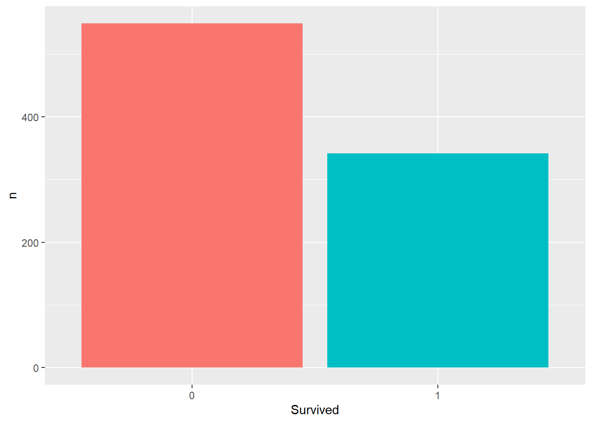
all_data |>
filter(!is.na(Survived)) |>
mutate(Survived = factor(Survived)) |>
group_by(Sex, Survived) |>
summarise(n = n()) |>
ggplot(aes(Survived, n, fill = Sex)) +
geom_col(position = "dodge")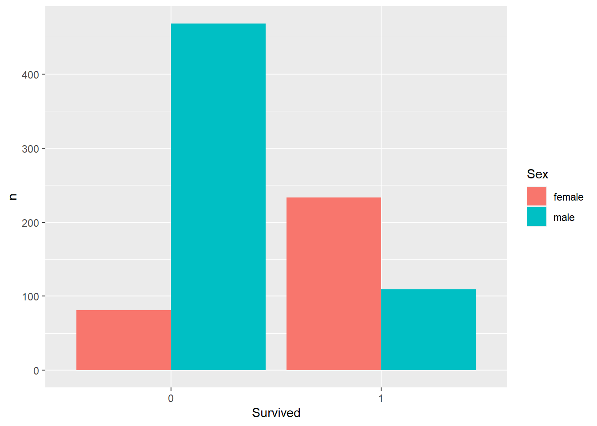
all_data |>
filter(Survived == 1) |> # Si sobreviven
tabyl(Sex) Sex n percent
female 233 0.6812865
male 109 0.3187135all_data |>
filter(Survived == 0) |> # No sobreviven
tabyl(Sex) Sex n percent
female 81 0.147541
male 468 0.852459all_data |>
filter(!is.na(Age)) |>
group_by(Sex) |>
summarise(mean = mean(Age))# A tibble: 2 × 2
Sex mean
<chr> <dbl>
1 female 28.7
2 male 30.6all_data |>
filter(!is.na(Age), !is.na(Survived)) |>
group_by(Sex, Survived) |>
summarise(mean = mean(Age))# A tibble: 4 × 3
# Groups: Sex [2]
Sex Survived mean
<chr> <dbl> <dbl>
1 female 0 25.0
2 female 1 28.8
3 male 0 31.6
4 male 1 27.3all_data |>
filter(!is.na(Age), !is.na(Survived)) |>
ggplot(aes(Age, Sex)) +
geom_boxplot()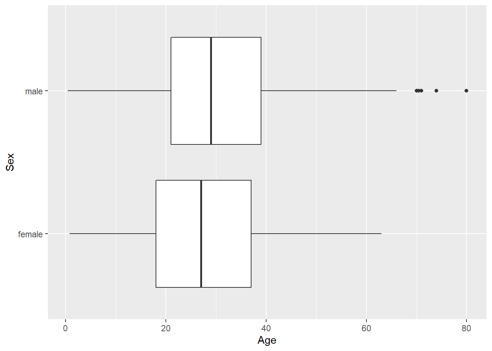
all_data |>
filter(!is.na(Age), !is.na(Survived)) |>
ggplot(aes(Age, factor(Survived), fill = Sex)) +
geom_boxplot()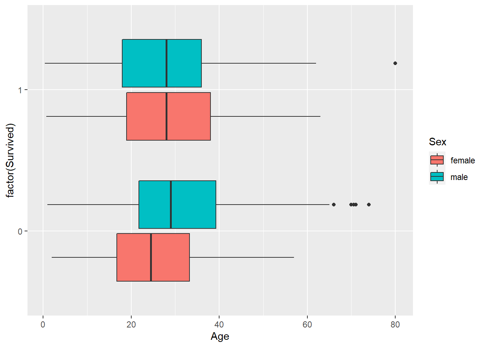
Revisemos algo de los datos las clases:
all_data |>
ggplot(aes(factor(Pclass), fill = factor(Pclass))) +
geom_bar() +
scale_fill_discrete(name = "Class", labels = c("1st", "2nd", "3rd"))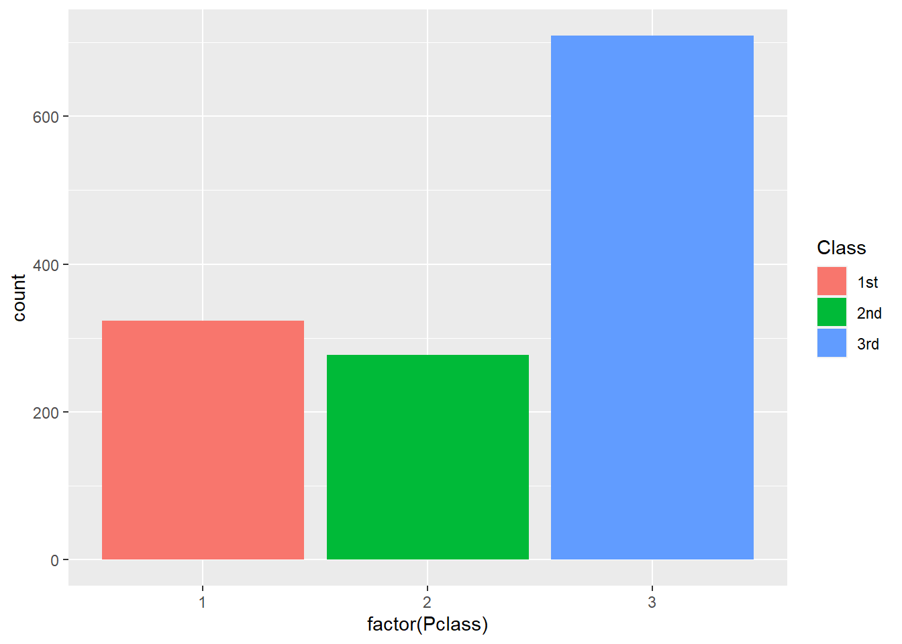
all_data |>
filter(!is.na(Survived)) |>
ggplot(aes(factor(Pclass), fill = factor(Survived))) +
geom_bar(position = "dodge")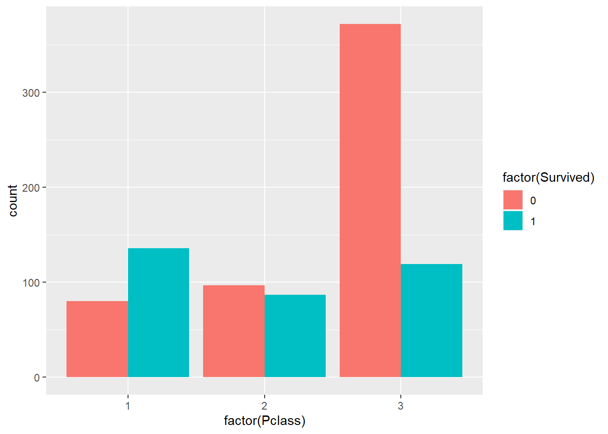
Acá aparece algo interesate. Las personas de tercera clase, en su mayoría, no sobrevivieron. A diferencia de los de primera clase, donde hubo más sobrevivientes que fallecidos (proporcionalmente).
Revisemos el costo de los tickets.
all_data |>
ggplot(aes(Fare)) +
geom_histogram(bins = 30)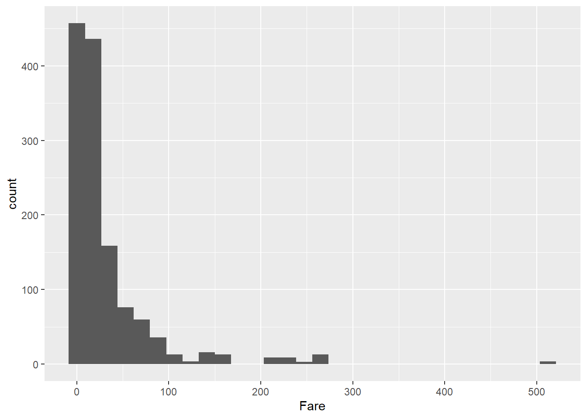
all_data |>
filter(!is.na(Survived)) |>
ggplot(aes(Fare, fill = factor(Survived))) +
geom_density(alpha = 0.6)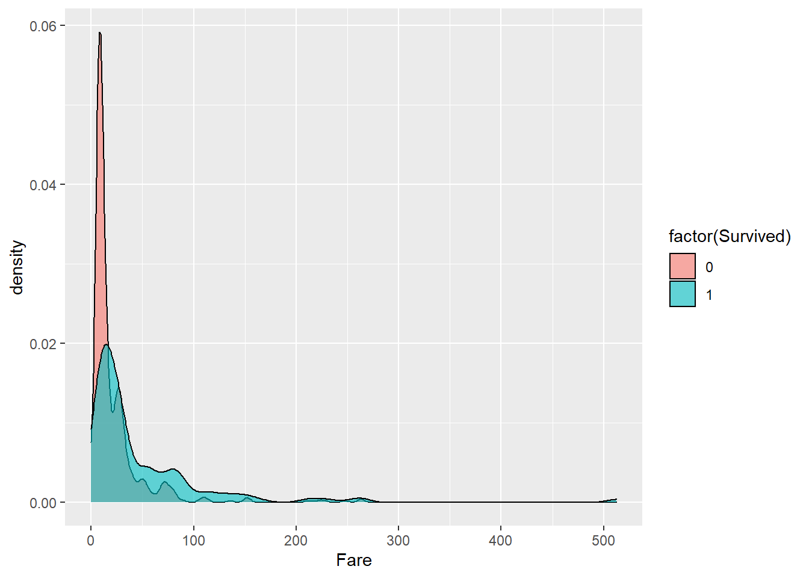
Estos datos señalan en el mismo sentido de que las personas de clases más altas y con tickets más caros, sobrevivieron más.
Manejo de NA´s
Volvamos un poco a revisar los datos faltantes (NA´s).
summary(VIM::aggr(all_data))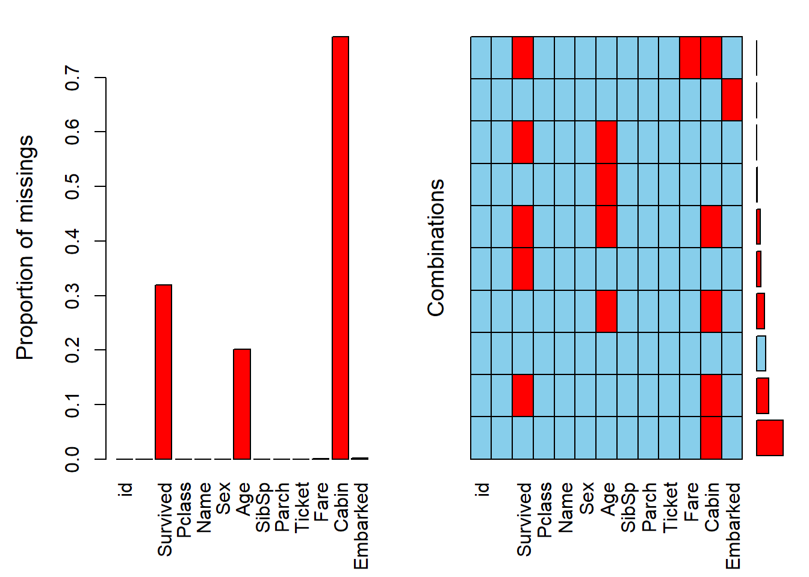
Missings per variable:
Variable Count
id 0
PassengerId 0
Survived 418
Pclass 0
Name 0
Sex 0
Age 263
SibSp 0
Parch 0
Ticket 0
Fare 1
Cabin 1014
Embarked 2
Missings in combinations of variables:
Combinations Count Percent
0:0:0:0:0:0:0:0:0:0:0:0:0 183 13.98013751
0:0:0:0:0:0:0:0:0:0:0:0:1 2 0.15278839
0:0:0:0:0:0:0:0:0:0:0:1:0 529 40.41252865
0:0:0:0:0:0:1:0:0:0:0:0:0 19 1.45148969
0:0:0:0:0:0:1:0:0:0:0:1:0 158 12.07028266
0:0:1:0:0:0:0:0:0:0:0:0:0 87 6.64629488
0:0:1:0:0:0:0:0:0:0:0:1:0 244 18.64018335
0:0:1:0:0:0:0:0:0:0:1:1:0 1 0.07639419
0:0:1:0:0:0:1:0:0:0:0:0:0 4 0.30557678
0:0:1:0:0:0:1:0:0:0:0:1:0 82 6.26432391Ya lo habíamos visto antes. Los registros tienen bastantes datos faltantes (missing data). Estos datos se presentan especialmente en las variables Age y Cabin. Survived tienen muchos NA´s, pues unimos los regitros al inicio por temas metodológicos, pero acá no tiene relevancia.
Acá tenemos un tema muy relevante en proyectos de datos y es el manejar los datos faltantes y tomar decisiones al respecto. En este artículo no profundizaré demasiado en este tema, pues se escapa del objetivo de ser más demostrativo. Pero es un área relevante de estudio que posiblemente aborde en otro artículo más adelante.
En este caso, tomaré 2 decisiones. Con respecto a la variable Cabin no la considaré para el desarrollo y entrenamiento del algoritmo, pues tiene un porcentaje muy alto de pérdida y adaptarlo a algo útil parece ser poco factible, en un primer momento. Con la variable Age pasa algo distinto, pues parece tener más relevancia en la probabilidad de sobrevivir.
Entonces, haremos algo para completar esos datos. Una alternativa es imputar datos. Es decir, asumir la edad en base a algunos supuestos. Existen varias metodologías como calcular la media o mediana de todos los datos de edad y ponérselo a los NA´s. Otro método es aplicar algoritmos de machine learning para predecir ese dato e imputarlo.
Veamos algunos datos de la edad:
summary(all_data$Age) Min. 1st Qu. Median Mean 3rd Qu. Max. NA's
0.17 21.00 28.00 29.88 39.00 80.00 263 all_data |>
ggplot(aes(Age)) +
geom_histogram()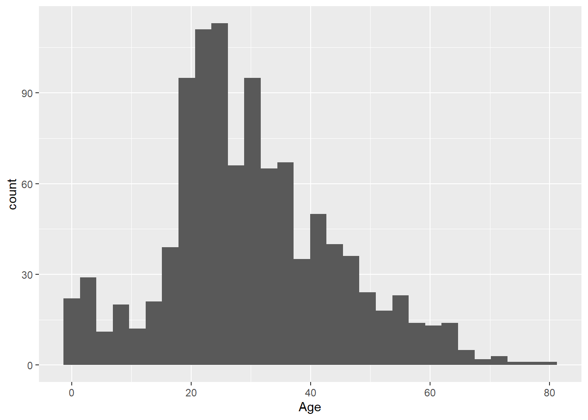
Debido a que la distribución de la edad se acerca a una distribución normal (histograma) y a que la media y mediana se a cercan bastante, podriamos usar el primer enfoque de amputación, que es usar la mediana para completar los datos faltantes. Te recuerdo que este es solo un enfoque posible. En proyectos reales, lo que se hace es probar muchos modelos y métodos y analizar su desempeño. Insisto, para efectos de este artículo, usaré este acercamiento.
Verifiquemos las normalidad de los datos de edad. Primero, realizaremos un gráfico QQ plot, el cual consiste en comparar los cuantiles de la distribución observada con los cuantiles teóricos de una distribución normal con la misma media y desviación estándar que los datos. En la medida que los datos se ajusten a la línea proyectada, más se aproximan a una distribución normal.
Aplicaré la función lillie.test de la librería nortest para usar el test de Lilliefors. Este test nace con la idea de resolver uno de los problemas del test Kolmogorov-Smirnov que es al no conocer la media y la varianza poblacional, tiene poca potencia estadística. El test Lilliefors asume que la media y varianza son desconocidas y es especialmente útil en muestras grandes.
qqnorm(all_data$Age, pch = 19, col = "gray50")
qqline(all_data$Age)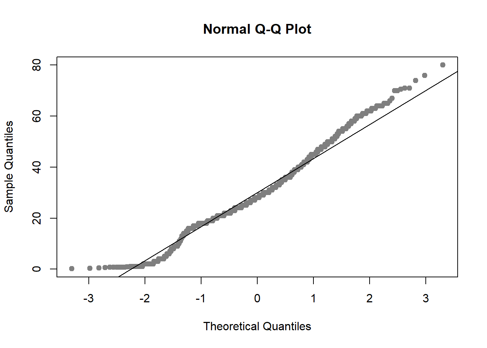
nortest::lillie.test(all_data$Age)
Lilliefors (Kolmogorov-Smirnov) normality test
data: all_data$Age
D = 0.078928, p-value < 2.2e-16Vemos que tanto QQ plot y el test Lilliefors apuntan a que los datos tienen una distribución normal.
Volvamos a ver los datos, separados por sexo:
all_data |>
ggplot(aes(Age)) +
geom_histogram() +
facet_grid(~ Sex)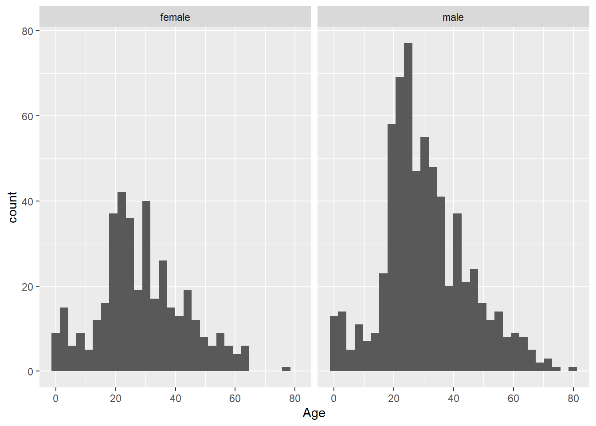
Imputación de datos.
Podríamos imputar los datos faltantes usando las siguientes líneas de código.
all_data$Age[is.na(all_data$Age)] <- median(all_data$Age, na.rm = TRUE)
all_data$Fare[is.na(all_data$Fare)] <- mean(all_data$Fare, na.rm = TRUE)
all_data$Embarked[is.na(all_data$Embarked)] <- mode(all_data$Embarked)Feature Engineering
El dataset tiene algunas variables que son de dudosa ayuda para predecir y generar el algoritmo, al menos, a priori. Casi por sentido común. Aún cuando tomar decisiones por sentido común podría no ser la mejor alternativa, muchas veces nos equivocamos o traspasamos nuestros sesgos a los análisis. La idea siempre es tratar de dejar que “los datos hablen”. En este caso, como es un artículo más referencial, no profundizaré en la generación y manipulación de las variables para no confundir tanto, pero si haré un par de cosas que me parecen interesantes y que muestra las posibilidades del feature engineering.
Las variables Ticket, Name y Cabin parecen ser datos poco informativos para saber si alguien sobrevivió o no al accidente. Sin embargo, no sería tan así. Es posible que la cabina tenga alguna relación con la sobrevivencia, quizás por cercanía a un pasillo o algo así. El n° de ticket también quizás se asocia a algo, no lo sabemos, es necesario investigar. Que como ya te mencioné, no lo haremos en esta ocasión jaja 😄
Pero si revisemos un poco más el nombre de los pasajeros. Si revisas, el registro contiene el nombre de la personas y su título (Mr, Miss, Dr, Col, etc). Ese dato podría ser útil para la predicción. Quizás había algún tipo de jerarquía que favoreciera que se salvaran. También el apellido de las personas podría ser útil, más que nada por temas de agrupar a familias.
Entonces, crearemos 2 nuevas variables: Title y Surname. Para ello, usaremos la función mutate y nos ayudaremos de las REGEX (expresiones regulares) para extraer los datos desde el nombre.
Consejo: aprende REGEX. Es una gran herramienta en el análisis de datos y aplica no solo para programación en R, sino que para cualquier otro. Incluso se usa en navegadores web, email y diversas aplicaciones.
all_data <- all_data |>
mutate(
Title = str_extract(Name, "(?<=,[:space:])(.*?)[.]"),
Surname = str_extract(Name, ".*(?=[,])")
)Veamos como nos quedaron los datos…
all_data |>
head()# A tibble: 6 × 15
id Passen…¹ Survi…² Pclass Name Sex Age SibSp Parch Ticket Fare Cabin
<chr> <dbl> <dbl> <dbl> <chr> <chr> <dbl> <dbl> <dbl> <chr> <dbl> <chr>
1 train 1 0 3 Brau… male 22 1 0 A/5 2… 7.25 <NA>
2 train 2 1 1 Cumi… fema… 38 1 0 PC 17… 71.3 C85
3 train 3 1 3 Heik… fema… 26 0 0 STON/… 7.92 <NA>
4 train 4 1 1 Futr… fema… 35 1 0 113803 53.1 C123
5 train 5 0 3 Alle… male 35 0 0 373450 8.05 <NA>
6 train 6 0 3 Mora… male 28 0 0 330877 8.46 <NA>
# … with 3 more variables: Embarked <chr>, Title <chr>, Surname <chr>, and
# abbreviated variable names ¹PassengerId, ²Survivedunique(all_data$Title) [1] "Mr." "Mrs." "Miss." "Master."
[5] "Don." "Rev." "Dr." "Mme."
[9] "Ms." "Major." "Lady." "Sir."
[13] "Mlle." "Col." "Capt." "the Countess."
[17] "Jonkheer." "Dona." Podemos ampliar la variable Sex en base a los títulos. En especial, agregar algo que identifique a los niños. Si te fijaste, los sobrevivientes son en general más jóvenes. Además, existe esta frase típica de salvar a los niños y las mujeres primero. No tengo claro si eso es tan real, pero podría serlo. Así que agreguemos la posibilidad.
Man <- c(
"Mr.", "Sir.", "Don.", "Rev.", "Major.",
"Col.", "Capt.", "Jonkheer.",
"Dr.", "Nobel."
)
Female <- c("Mrs.", "Miss.", "Mme.", "Ms.", "Lady.", "Mlle.", "the Countess.", "Dona.")
Boy <- c("Master.")
all_data <- all_data |>
rowwise() |>
mutate(
Sex =
case_when(
(Title %in% Man) ~ "Man",
(Title %in% Female) ~ "Female",
(Title %in% Boy) ~ "Boy",
TRUE ~ Title
)
)Revisemos cómo quedan los grupos con esta nueva clasificación:
all_data |>
filter(!is.na(Survived)) |>
tabyl(Sex, Survived) Sex 0 1
Boy 17 23
Female 81 232
Man 451 87all_data |>
filter(!is.na(Survived)) |>
mutate(Survived = factor(Survived)) |>
group_by(Sex, Survived) |>
summarise(n = n()) |>
ggplot(aes(Sex, n, fill = Survived)) +
geom_col(position = "dodge")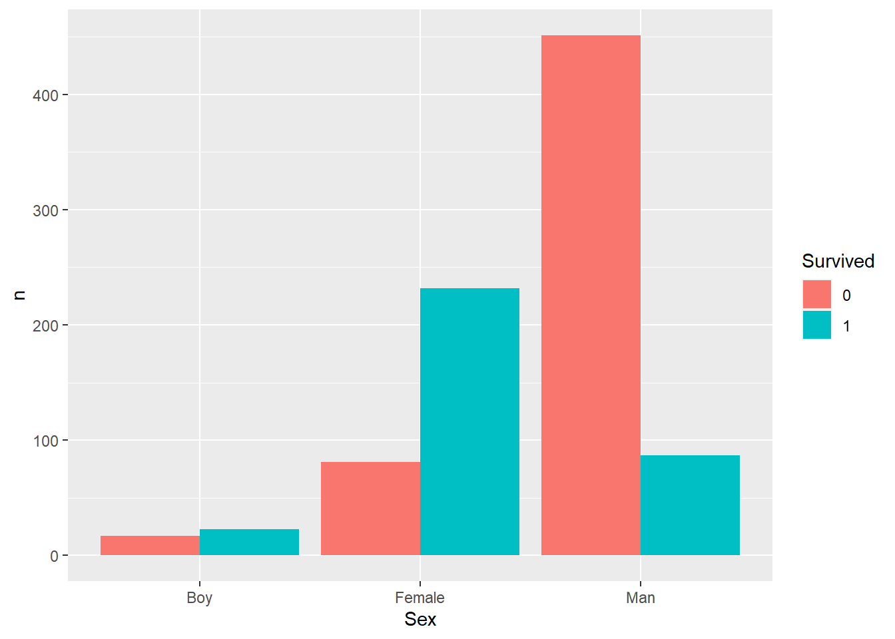
Ahora vamos a crear una nueva variable, que es el tamaño de la familia. Para eso, sumaremos las variables SibSp (n° de hermanos y esposas/os) y Parch (n° de hijos y padres). A la suma le agregamos 1, pues agregamos al mismo pasajero al grupo familiar.
all_data <- all_data |>
mutate(
Family_size = as.numeric(SibSp) + as.numeric(Parch) + 1,
Family_type = factor(ifelse(Family_size == 1, "Single",
ifelse(Family_size <= 3, "Small", "Large")
))
) |>
unnest(cols = c())Revisemos nuevamente los datos faltantes. Esto es importante, pues muchos modelos de machine learning no soportan variables con NA´s o pueden alterar las predicciones.
summary(VIM::aggr(all_data))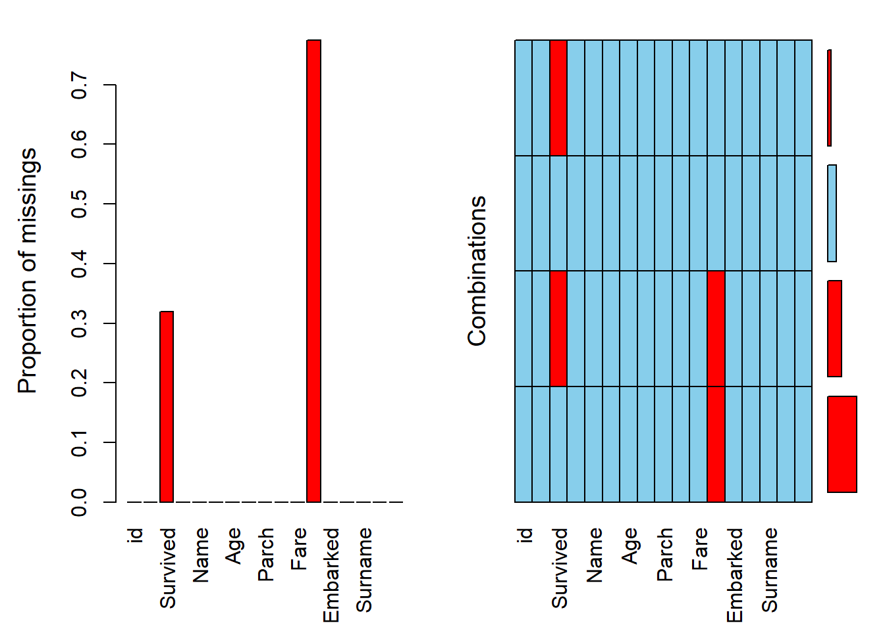
Missings per variable:
Variable Count
id 0
PassengerId 0
Survived 418
Pclass 0
Name 0
Sex 0
Age 0
SibSp 0
Parch 0
Ticket 0
Fare 0
Cabin 1014
Embarked 0
Title 0
Surname 0
Family_size 0
Family_type 0
Missings in combinations of variables:
Combinations Count Percent
0:0:0:0:0:0:0:0:0:0:0:0:0:0:0:0:0 204 15.584416
0:0:0:0:0:0:0:0:0:0:0:1:0:0:0:0:0 687 52.482811
0:0:1:0:0:0:0:0:0:0:0:0:0:0:0:0:0 91 6.951872
0:0:1:0:0:0:0:0:0:0:0:1:0:0:0:0:0 327 24.980901Por ahora, voy a dejar el análisis exploratorio hasta acá. Podríamos estar mucho tiempo más revisando y dándole vueltas al tema, pero creo que con lo que hemos visto ya te has hecho una buena idea de qué va ésto.
Habitualmente, los proyecto de Ciencia de Datos destinan cerca del 80% del tiempo en este tipo de actividades.
Modelamiento ML
Para el modelamiento del algoritmo de machine learning (ML) usaremos la librería H2O.
H2O funciona bastante distinto que otras librerías, pues lo que hace es levantar un servidor y nos conoctamos a él, y es en ese servidor donde se ejecutan los algoritmos. H2O es una plataforma de autoML o de modelos de machine learning pre-entrenados. En palabras simples, la configuración de los algoritmos viene ya lista “de fábrica”. En palabras más complejas, los modelos de autoML ajustan el tuneo de los hiperparámetros de forma automática o ya cuentan con valores predefinidos.
# Separamos el dataset para los datos de entrenamiento
titanic_train <- all_data |>
filter(id == "train") |>
select(-c(id, PassengerId, Name, Ticket, Cabin))Analicemos los tipos de datos de titanic_train:
str(titanic_train)tibble [891 × 12] (S3: tbl_df/tbl/data.frame)
$ Survived : num [1:891] 0 1 1 1 0 0 0 0 1 1 ...
$ Pclass : num [1:891] 3 1 3 1 3 3 1 3 3 2 ...
$ Sex : chr [1:891] "Man" "Female" "Female" "Female" ...
$ Age : num [1:891] 22 38 26 35 35 28 54 2 27 14 ...
$ SibSp : num [1:891] 1 1 0 1 0 0 0 3 0 1 ...
$ Parch : num [1:891] 0 0 0 0 0 0 0 1 2 0 ...
$ Fare : num [1:891] 7.25 71.28 7.92 53.1 8.05 ...
$ Embarked : chr [1:891] "S" "C" "S" "S" ...
$ Title : chr [1:891] "Mr." "Mrs." "Miss." "Mrs." ...
$ Surname : chr [1:891] "Braund" "Cumings" "Heikkinen" "Futrelle" ...
$ Family_size: num [1:891] 2 2 1 2 1 1 1 5 3 2 ...
$ Family_type: Factor w/ 3 levels "Small","Single",..: 1 1 2 1 2 2 2 3 1 1 ...Cambiaremos algunos tipos de datos por algo más útil.
titanic_train <- titanic_train |>
mutate(
Survived = factor(Survived),
Pclass = factor(Pclass),
Sex = factor(Sex),
Embarked = factor(Embarked),
Title = factor(Title)
)Ok. Tenemos nuestros datos de entrenamiento listos o, al menos, más preparados para ser analizados.
# Cargamos la librería de H2O
library(h2o)
# Creación de un cluster local con todos los cores disponibles
h2o.init(
ip = "localhost",
# -1 indica que se empleen todos los cores disponibles
nthreads = -1,
# Máxima memoria disponible para el cluster
max_mem_size = "3g"
)
H2O is not running yet, starting it now...
Note: In case of errors look at the following log files:
C:\Users\pvill\AppData\Local\Temp\RtmpIffI42\file5c1c27484d8d/h2o_pvill_started_from_r.out
C:\Users\pvill\AppData\Local\Temp\RtmpIffI42\file5c1c3c976d3e/h2o_pvill_started_from_r.err
Starting H2O JVM and connecting: Connection successful!
R is connected to the H2O cluster:
H2O cluster uptime: 2 seconds 801 milliseconds
H2O cluster timezone: America/Santiago
H2O data parsing timezone: UTC
H2O cluster version: 3.36.1.2
H2O cluster version age: 4 months and 14 days !!!
H2O cluster name: H2O_started_from_R_pvill_ufb539
H2O cluster total nodes: 1
H2O cluster total memory: 2.98 GB
H2O cluster total cores: 16
H2O cluster allowed cores: 16
H2O cluster healthy: TRUE
H2O Connection ip: localhost
H2O Connection port: 54321
H2O Connection proxy: NA
H2O Internal Security: FALSE
R Version: R version 4.2.1 (2022-06-23 ucrt) # Se eliminan los datos del cluster por si ya había sido iniciado
h2o.removeAll()
# Para que no se muestre la barra de progreso
h2o.no_progress()titanic_h2o = as.h2o(titanic_train)Para nuestro caso, aplicaremos autoML o machine learning automatizado.
En la documentación oficial de H2O puedes ver más detalles.
Vamos al tema y veamos cómo se podría implementar una solución simple de autoML.
# Separación de las observaciones en conjunto de entrenamiento y test
splits <- h2o.splitFrame(data = titanic_h2o, ratios = 0.8, seed = 123)
titanic_train_h2o <- splits[[1]]
titanic_test_h2o <- splits[[2]]
# Se define la variable respuesta y los predictores
response <- "Survived"
# Para este modelo se emplean todos los predictores disponibles
predictors <- setdiff(h2o.colnames(titanic_h2o), response)
# Ejectutamos 20 modelos de autoML
aml <- h2o.automl(
x = predictors, y = response,
training_frame = titanic_train_h2o,
max_models = 20,
seed = 123
)
22:00:07.918: AutoML: XGBoost is not available; skipping it.
22:00:07.948: _train param, Dropping bad and constant columns: [Surname]
22:00:09.7: _train param, Dropping bad and constant columns: [Surname]
22:00:09.834: _train param, Dropping bad and constant columns: [Surname]
22:00:11.678: _train param, Dropping bad and constant columns: [Surname]
22:00:14.686: _train param, Dropping bad and constant columns: [Surname]
22:00:15.69: _train param, Dropping bad and constant columns: [Surname]
22:00:15.384: _train param, Dropping bad and constant columns: [Surname]
22:00:15.918: _train param, Dropping bad and constant columns: [Surname]
22:00:16.213: _train param, Dropping bad and constant columns: [Surname]
22:03:33.246: _train param, Dropping unused columns: [Surname]
22:03:33.966: _train param, Dropping unused columns: [Surname]# Ver autoML Leaderboard
lb <- aml@leaderboard
print(lb, n = nrow(lb)) model_id auc logloss
1 XRT_1_AutoML_1_20221010_220007 0.8709619 0.4280390
2 StackedEnsemble_BestOfFamily_1_AutoML_1_20221010_220007 0.8705471 0.4134399
3 GBM_2_AutoML_1_20221010_220007 0.8684124 0.4212379
4 GBM_4_AutoML_1_20221010_220007 0.8644931 0.4242718
5 GBM_grid_1_AutoML_1_20221010_220007_model_3 0.8636030 0.4252027
6 GBM_grid_1_AutoML_1_20221010_220007_model_1 0.8635338 0.4239069
7 StackedEnsemble_AllModels_1_AutoML_1_20221010_220007 0.8633567 0.4180044
8 GBM_5_AutoML_1_20221010_220007 0.8622764 0.4245518
9 GLM_1_AutoML_1_20221010_220007 0.8607726 0.4308457
10 GBM_grid_1_AutoML_1_20221010_220007_model_4 0.8603405 0.4310881
11 GBM_3_AutoML_1_20221010_220007 0.8595238 0.4300964
12 DRF_1_AutoML_1_20221010_220007 0.8591176 0.4954942
13 GBM_grid_1_AutoML_1_20221010_220007_model_5 0.8572120 0.4396899
14 DeepLearning_1_AutoML_1_20221010_220007 0.8554533 0.4421416
15 GBM_1_AutoML_1_20221010_220007 0.8477487 0.4579601
16 GBM_grid_1_AutoML_1_20221010_220007_model_2 0.8461974 0.4603829
17 DeepLearning_grid_1_AutoML_1_20221010_220007_model_1 0.8459338 0.4700233
18 DeepLearning_grid_3_AutoML_1_20221010_220007_model_2 0.8442010 0.4643837
19 DeepLearning_grid_3_AutoML_1_20221010_220007_model_1 0.8430386 0.4639954
20 DeepLearning_grid_2_AutoML_1_20221010_220007_model_1 0.8421658 0.5036609
21 DeepLearning_grid_2_AutoML_1_20221010_220007_model_2 0.8417077 0.4876815
22 DeepLearning_grid_1_AutoML_1_20221010_220007_model_2 0.8367168 0.4939174
aucpr mean_per_class_error rmse mse
1 0.8346343 0.1859390 0.3661840 0.1340907
2 0.8431666 0.1848025 0.3583348 0.1284039
3 0.8327107 0.1849797 0.3617789 0.1308840
4 0.8276144 0.1848846 0.3614534 0.1306485
5 0.8311913 0.1859260 0.3635181 0.1321454
6 0.8353353 0.1885360 0.3626827 0.1315388
7 0.8405026 0.1884539 0.3599988 0.1295991
8 0.8292195 0.1808141 0.3626516 0.1315162
9 0.8366766 0.2003414 0.3684605 0.1357631
10 0.8290372 0.1826938 0.3667785 0.1345264
11 0.8246865 0.1873866 0.3651803 0.1333567
12 0.8311538 0.1900095 0.3704124 0.1372053
13 0.8172740 0.1861291 0.3691785 0.1362927
14 0.8239047 0.2093596 0.3734248 0.1394461
15 0.8225336 0.2232089 0.3811518 0.1452767
16 0.8238082 0.2195575 0.3818452 0.1458057
17 0.8146578 0.2207329 0.3826731 0.1464387
18 0.8205795 0.2111875 0.3775377 0.1425347
19 0.8131408 0.1991919 0.3781846 0.1430236
20 0.7876542 0.2118356 0.3902014 0.1522571
21 0.8254982 0.1996111 0.3762526 0.1415660
22 0.8212612 0.1992049 0.3808260 0.1450284
[22 rows x 7 columns] # Podemos revisar el modelo ganador
aml@leaderModel Details:
==============
H2OBinomialModel: drf
Model ID: XRT_1_AutoML_1_20221010_220007
Model Summary:
number_of_trees number_of_internal_trees model_size_in_bytes min_depth
1 33 33 39118 13
max_depth mean_depth min_leaves max_leaves mean_leaves
1 20 17.72727 42 137 89.30303
H2OBinomialMetrics: drf
** Reported on training data. **
** Metrics reported on Out-Of-Bag training samples **
MSE: 0.1491174
RMSE: 0.3861573
LogLoss: 0.5119568
Mean Per-Class Error: 0.2038026
AUC: 0.8463313
AUCPR: 0.8090878
Gini: 0.6926627
R^2: 0.3667232
Confusion Matrix (vertical: actual; across: predicted) for F1-optimal threshold:
0 1 Error Rate
0 346 89 0.204598 =89/435
1 54 212 0.203008 =54/266
Totals 400 301 0.203994 =143/701
Maximum Metrics: Maximum metrics at their respective thresholds
metric threshold value idx
1 max f1 0.437500 0.747795 179
2 max f2 0.378927 0.795292 202
3 max f0point5 0.755055 0.782353 73
4 max accuracy 0.651129 0.803138 103
5 max precision 0.879121 0.963855 37
6 max recall 0.026050 1.000000 393
7 max specificity 1.000000 0.997701 0
8 max absolute_mcc 0.459596 0.585658 169
9 max min_per_class_accuracy 0.437500 0.795402 179
10 max mean_per_class_accuracy 0.459596 0.796413 169
11 max tns 1.000000 434.000000 0
12 max fns 1.000000 250.000000 0
13 max fps 0.000000 435.000000 399
14 max tps 0.026050 266.000000 393
15 max tnr 1.000000 0.997701 0
16 max fnr 1.000000 0.939850 0
17 max fpr 0.000000 1.000000 399
18 max tpr 0.026050 1.000000 393
Gains/Lift Table: Extract with `h2o.gainsLift(<model>, <data>)` or `h2o.gainsLift(<model>, valid=<T/F>, xval=<T/F>)`
H2OBinomialMetrics: drf
** Reported on cross-validation data. **
** 5-fold cross-validation on training data (Metrics computed for combined holdout predictions) **
MSE: 0.1340907
RMSE: 0.366184
LogLoss: 0.428039
Mean Per-Class Error: 0.185939
AUC: 0.8709619
AUCPR: 0.8346343
Gini: 0.7419238
R^2: 0.4305393
Confusion Matrix (vertical: actual; across: predicted) for F1-optimal threshold:
0 1 Error Rate
0 355 80 0.183908 =80/435
1 50 216 0.187970 =50/266
Totals 405 296 0.185449 =130/701
Maximum Metrics: Maximum metrics at their respective thresholds
metric threshold value idx
1 max f1 0.418827 0.768683 202
2 max f2 0.274074 0.821104 257
3 max f0point5 0.628670 0.789720 135
4 max accuracy 0.497812 0.823110 180
5 max precision 1.000000 1.000000 0
6 max recall 0.046593 1.000000 394
7 max specificity 1.000000 1.000000 0
8 max absolute_mcc 0.496049 0.624389 181
9 max min_per_class_accuracy 0.418827 0.812030 202
10 max mean_per_class_accuracy 0.418827 0.814061 202
11 max tns 1.000000 435.000000 0
12 max fns 1.000000 263.000000 0
13 max fps 0.023070 435.000000 399
14 max tps 0.046593 266.000000 394
15 max tnr 1.000000 1.000000 0
16 max fnr 1.000000 0.988722 0
17 max fpr 0.023070 1.000000 399
18 max tpr 0.046593 1.000000 394
Gains/Lift Table: Extract with `h2o.gainsLift(<model>, <data>)` or `h2o.gainsLift(<model>, valid=<T/F>, xval=<T/F>)`
Cross-Validation Metrics Summary:
mean sd cv_1_valid cv_2_valid cv_3_valid
accuracy 0.830233 0.029251 0.836879 0.871429 0.792857
auc 0.874299 0.027893 0.851602 0.907378 0.841389
err 0.169767 0.029251 0.163121 0.128571 0.207143
err_count 23.800000 4.086563 23.000000 18.000000 29.000000
f0point5 0.763671 0.029804 0.733083 0.810277 0.743034
f1 0.789989 0.020935 0.772277 0.820000 0.768000
f2 0.818491 0.014345 0.815900 0.829959 0.794702
lift_top_group 2.664176 0.313517 3.065218 2.857143 2.372881
logloss 0.432077 0.031004 0.432689 0.391192 0.478483
max_per_class_error 0.187373 0.027715 0.168421 0.163265 0.222222
mcc 0.650161 0.049185 0.653039 0.720411 0.584946
mean_per_class_accuracy 0.831079 0.025358 0.839703 0.863422 0.795669
mean_per_class_error 0.168921 0.025358 0.160297 0.136578 0.204331
mse 0.135078 0.011345 0.135005 0.120964 0.152672
pr_auc 0.834787 0.042016 0.773003 0.882346 0.814953
precision 0.747210 0.035625 0.709091 0.803922 0.727273
r2 0.422426 0.041388 0.385804 0.468290 0.373851
recall 0.838855 0.015019 0.847826 0.836735 0.813559
rmse 0.367275 0.015319 0.367430 0.347799 0.390732
specificity 0.823302 0.044511 0.831579 0.890110 0.777778
cv_4_valid cv_5_valid
accuracy 0.814286 0.835714
auc 0.876458 0.894668
err 0.185714 0.164286
err_count 26.000000 23.000000
f0point5 0.768072 0.763889
f1 0.796875 0.792793
f2 0.827922 0.823970
lift_top_group 2.333333 2.692308
logloss 0.429635 0.428385
max_per_class_error 0.212500 0.170455
mcc 0.631219 0.661193
mean_per_class_accuracy 0.818750 0.837850
mean_per_class_error 0.181250 0.162150
mse 0.133763 0.132989
pr_auc 0.849705 0.853930
precision 0.750000 0.745763
r2 0.453803 0.430380
recall 0.850000 0.846154
rmse 0.365736 0.364676
specificity 0.787500 0.829545# Importancia de las variables
h2o.varimp(aml@leader)Variable Importances:
variable relative_importance scaled_importance percentage
1 Title 940.399963 1.000000 0.283786
2 Sex 586.606567 0.623784 0.177021
3 Fare 567.343628 0.603300 0.171208
4 Age 460.132050 0.489294 0.138855
5 Pclass 328.859924 0.349702 0.099241
6 Family_size 121.330360 0.129020 0.036614
7 SibSp 91.768562 0.097585 0.027693
8 Family_type 87.194229 0.092720 0.026313
9 Embarked 85.729736 0.091163 0.025871
10 Parch 44.400452 0.047214 0.013399h2o.varimp_plot(aml@leader)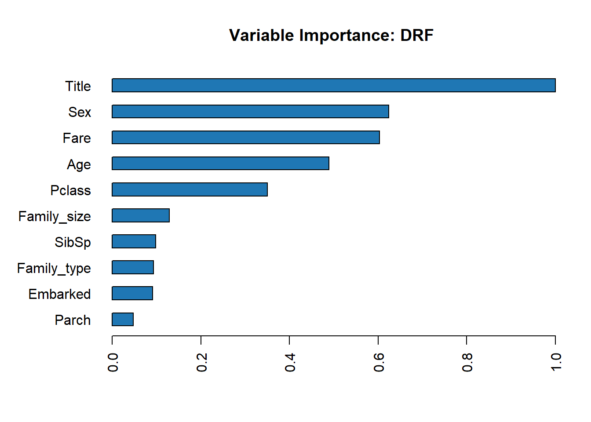
# Área bajo la curva AUC para los datos de entrenamiento
h2o.auc(aml@leader, train = TRUE)[1] 0.8463313h2o.performance(model = aml@leader, train = TRUE)H2OBinomialMetrics: drf
** Reported on training data. **
** Metrics reported on Out-Of-Bag training samples **
MSE: 0.1491174
RMSE: 0.3861573
LogLoss: 0.5119568
Mean Per-Class Error: 0.2038026
AUC: 0.8463313
AUCPR: 0.8090878
Gini: 0.6926627
R^2: 0.3667232
Confusion Matrix (vertical: actual; across: predicted) for F1-optimal threshold:
0 1 Error Rate
0 346 89 0.204598 =89/435
1 54 212 0.203008 =54/266
Totals 400 301 0.203994 =143/701
Maximum Metrics: Maximum metrics at their respective thresholds
metric threshold value idx
1 max f1 0.437500 0.747795 179
2 max f2 0.378927 0.795292 202
3 max f0point5 0.755055 0.782353 73
4 max accuracy 0.651129 0.803138 103
5 max precision 0.879121 0.963855 37
6 max recall 0.026050 1.000000 393
7 max specificity 1.000000 0.997701 0
8 max absolute_mcc 0.459596 0.585658 169
9 max min_per_class_accuracy 0.437500 0.795402 179
10 max mean_per_class_accuracy 0.459596 0.796413 169
11 max tns 1.000000 434.000000 0
12 max fns 1.000000 250.000000 0
13 max fps 0.000000 435.000000 399
14 max tps 0.026050 266.000000 393
15 max tnr 1.000000 0.997701 0
16 max fnr 1.000000 0.939850 0
17 max fpr 0.000000 1.000000 399
18 max tpr 0.026050 1.000000 393
Gains/Lift Table: Extract with `h2o.gainsLift(<model>, <data>)` or `h2o.gainsLift(<model>, valid=<T/F>, xval=<T/F>)`# Performance para datos de validación
h2o.auc(aml@leader, xval = TRUE)[1] 0.8709619Revisemos la curva entre Recall vs Precision.
Estos 2 indicadores son de gran relevancia en la evaluación del desempeño de machine learninig. La Precisión (también llamada valor predictivo positivo) es la fracción de instancias relevantes entre las instancias recuperadas, mientras que el Recall (también conocida como sensibilidad) es la fracción de instancias relevantes que se recuperaron.
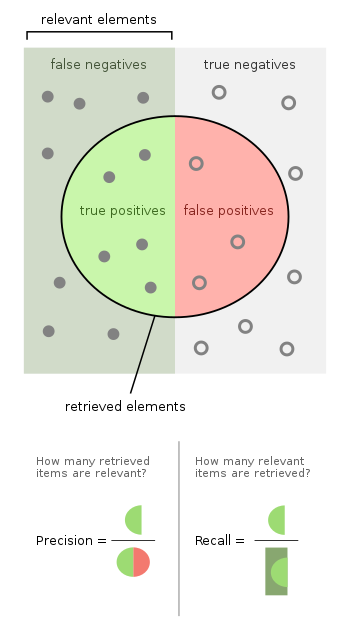
Puedes profundizar un poco más sobre este tema en este artículo.
perf <- h2o.performance(model = aml@leader, xval = TRUE)
metrics <- as.data.frame(h2o.metric(perf))
metrics |>
ggplot(aes(recall, precision)) +
geom_line() +
theme_minimal()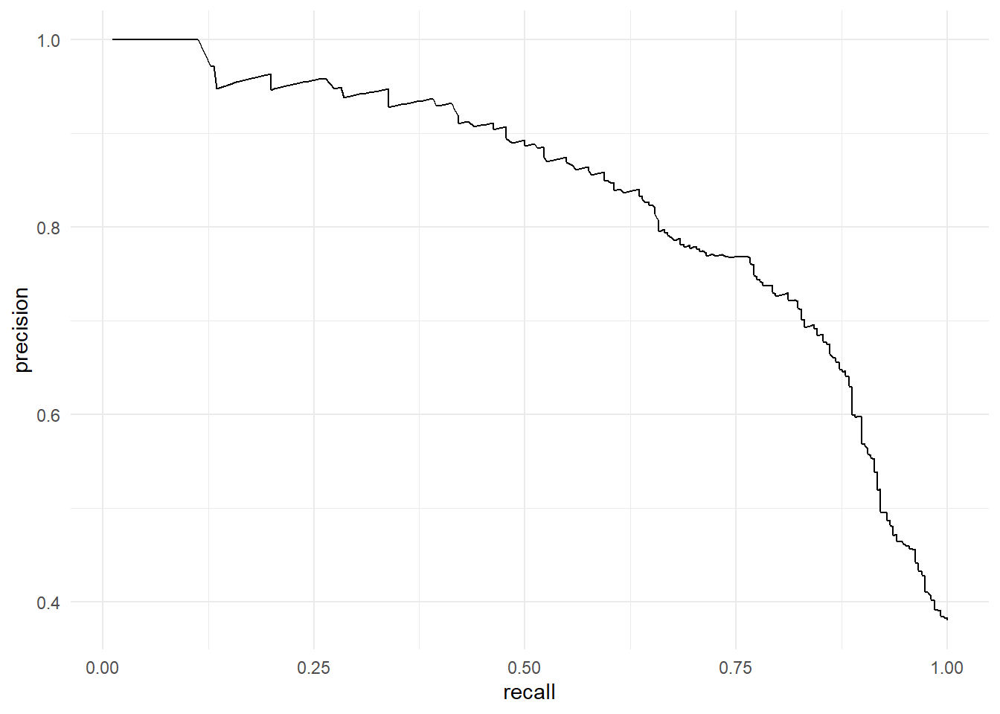
# Predicciones para test
predictions <- h2o.predict(object = aml@leader, newdata = titanic_test_h2o)
predictions predict p0 p1
1 1 0.33766234 0.6623377
2 1 0.07670676 0.9232932
3 1 0.16081239 0.8391876
4 0 0.62626263 0.3737374
5 0 0.76809858 0.2319014
6 1 0.21647427 0.7835257
[190 rows x 3 columns] Para guardar el modelo generado en el directorio actual de tu computador y usarlo después, puedes usar este código:
h2o.saveModel(object = aml@leader, path = getwd(), force = TRUE)# Separamos dataset en test
titanic_test <- all_data |>
filter(id == "test") |>
select(-c(id, Survived, PassengerId, Name, Ticket, Cabin))
# Creamos el objeto H2O
titanic_test_h2o <- as.h2o(titanic_test)# Predicciones en nuevo set de datos.
predictions_test <- h2o.predict(object = aml@leader, newdata = titanic_test_h2o)
# Separamos solo las predicciones.
survived <- as.data.frame(predictions_test$predict)Ya que tenemos nuestas predicciones realizadas, generaremos el archivo para luego subir a Kaggle.
submission <- read_csv("gender_submission.csv") |>
select(1)
gender_submission <- as.data.frame(cbind(submission, survived)) |>
rename("Survived" = predict)
write.csv(gender_submission, "submission_autoML_leader_h2o.csv", row.names = FALSE)# Se apaga el cluster H2O
h2o.shutdown(prompt = FALSE)Subir a Kaggle
Subimos nuestro archivo a Kaggle y btenemos una puntuación de 0.76076
No esta mal, pero podría ser mejor. Hace unos meses obtuve 0.79 usando un modelo de ML ensamblado GLM + GBM (Gradient Boosting Machine).
En este caso, para mejorar el desempeño del algoritmo que fue el seleccionado como líder de la comparación de autoML, habría que tocar los hiperparámetros y reanalizar el feature engineering. Además, de ver opciones de otros modelos de machine learning. Pero considerar que el modelo que usamos para este artículo lo realizamos aplicando autoML. Es decir, usamos modelos pre-entrenados y con auto ajustes de hiperparámetros “out of the box” (predefinidos).
Conclusiones
Este artículo tiene fines demostrativos, no lo olvides. En la vida real, todo este proceso es (mucho) más largo y complejo. Existen muchas instancias de análisis estadísticos y mateméticos sobre los datos dsponibles. Además, es un proceso iterativo. O sea, generalmente se vuelve a etapas previas frecuentemente, se revisa lo que hay. Incluso, muchas veces es necesario investigar sobre la generación y captura de los datos. Del mismo modo, se generan muchos modelos y se realizan muchas pruebas hasta encontrar los de mejor desempeño y que tengan más explicabilidad (según sea el caso).
Revisamos, además, el uso de una tecnología emergente que son los modelos de machine learning pre-entrenados o autoML. Este tipo de modelos están cada vez más difundidos, en especial, en ambientes cloud. Por ejemplo, Google y Microsoft Azure tienen los suyos.
El desarrollo de modelos de machine learning tradicional consume bastantes recursos, y que requieren un conocimiento del dominio y tiempo significativos para generar y comparar docenas de modelos. El autoML reduce el tiempo necesario para obtener modelos de aprendizaje automático listos para producción con gran eficiencia y facilidad. Estos elementos son vitales en la actualidad para muchas startups e industrias. Además, amplia las opciones en el uso de este tipo de tecnologías a más personas y organizaciones.
A pesar de que parece magia todo ésto (o una caja negra que nadie sabe lo que pasa dentro), el uso de autoML ayuda a generar modelos de forma más rápida y facilita el desarrollo de modelos más completos en el corto plazo. Es una buena estrategia para screening.
Ok. Entonces no necesitamos ingenieros, matemáticos o científicos de datos?
No, para nada. Ciertamente estas tecnologías (autoML) democratizan el acceso a más personas, pero aún son necesarios los conocimientos y reflexiones de los expertos en el área para ajustar los modelos, controlar sesgos o problemas de equidad. Y, por cierto, que conozcan del negocio, pues finalmente el desarrollo de estas tecnologías buscan resolver problemáticas concretas. Sin mencionar todo el trabajo de comunicación, explicación y disfusión de los resultados, para los cual esos perfiles profesionales son de gran valor.
Finalmente, este ejercicio que hemos visto acá es más demostrativo que otra cosa, pero espero haberte mostrado cómo se pueden entrenar algoritmos y usar modelos de ML para generar predicciones.
Nos vemos!! 🤪